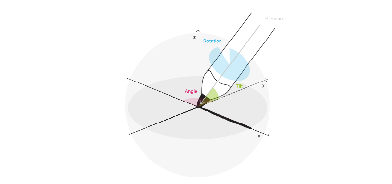

WILL SDK for ink
Wacom Ink Layer Language (WILL™) is a cross-platform digital ink technology. It is based on the needs of the end-user and Wacom's experience with different domains. WILL allows you to include premium digital inking features in your applications. It uses a modularized pipeline allowing each module to be configured, replaced, or omitted as required by the specific application, providing you with superior flexibility.
The newly introduced Universal Ink Model is a data model describing ink related data structures and meta-data concept to describe the semantic content of ink. You can also use the file encoding of the Universal Ink Model to exchange ink content between applications and cross-platform.
The WILL 3 Framework includes:
- Software libraries for multiple platforms (Windows, Android, iOS, Web)
- Code samples illustrating particular functionality
- A web-based Ink Designer to configure and test the pipeline
- Comprehensive documentation, including step-by-step guides
Design Concepts
The following is an introduction to the Design Concepts for our WILL technology.
Interoperability
WILL 3.0 technology and its Universal Ink Model is platform and device agnostic, thus the specification does not focus on specific hardware platforms. Ink Markup Language [InkML] and Ink Serialized Format [ISF] are the most well-known formats for storing digital ink besides Wacom Ink Layer Language [WILL]. The previous version of WILL did not support the storage of sensor data samples for digital ink (e.g., timestamps, (x,y)-coordinates, or pressure values). WILL 3.0 gives the ability to store ink sensor samples along with the visual representation of digital ink as well as semantic metadata. As a result it is now possible to make a loss-less conversion of the Universal Ink Data format to other existing formats.
Natural
Digital ink has to look natural and similar to real ink. To ensure that the visual appearance of the digital ink can be shared across platforms, WILL 3.0 contains all relevant data to present ink in a consistent way across all platforms. By using WILL particle ink rasterization, natural brushes can be configured to create artwork, as illustrated in Figure 1.
Figure 1: Artwork created with raster / particle ink.
Active
Mobile apps, Cloud application, or Cloud services have become a part of modern IT infrastructures. Thus, modern data formats need to address issues including:
- Unique identifiable IDs for devices
- Streaming capability for partial updates of ink data
- Document size reduction
- Support for commonly used Web Standards such as JSON
Figure 2: Active Ink.
Meta Data and Semantics
There are three types of metadata:
- Descriptive
- Structural
- Administrative
Descriptive metadata are typically used for discovery and identification, as information used to search and locate an object such as title, author, subject, keyword, and publisher. WILL offers metadata for the description of Document and Author in the ink document.
Structural metadata give a description of how the components of an object are organised. The metadata for ink can be used to describe the structure of ink documents.
Finally, administrative metadata give information to help manage the source. They refer to the technical information including file type or when and how the file was created. Two sub-types of administrative metadata are rights management metadata and preservation metadata. Rights management metadata explain intellectual property rights, while preservation metadata contain information that is needed to preserve and save a resource.
Semantic metadata is slowly becoming the differentiator in the vocabulary of many vendors. Semantics is the study of meaning. As it applies to technology and unstructured content, it represents the ability to extract meaning from words, phrases, sentences, and larger units of text that provide the context within content, and is manually applied or automatically generated as semantic metadata to describe the object. Semantic metadata is typically leveraged to improve search, but any application that uses metadata can achieve significant benefits through the generation or application of semantic metadata. Thus, WILL metadata is based on established metadata for document and author descriptions and defines its own semantic metadata for ink.
Sensor Data and Biometrics
Another important objective in the design of the Universal Ink Model is to support the capture of sensor data from ink devices. For example, sensor data is used in the context of handwriting analysis, as well as signature capture and verification.
Some ink devices provide additional information (see Figure 3) that in most use cases is considered less important and may not be supported by all makes or types of devices. This includes:
- Pressure - the force applied to the nib of the pen
- Inclination - the angle between the pen barrel and vertical
- Orientation - the plain-direction of the pen from the nib
- Rotation - the rotation of the barrel during signing

Figure 3: Overview ink sensor channels.
The forensic character of the data is of paramount importance, and means that the data-collection philosophy differs in many respects from competing signature technologies. A key principle is that during the collection of the signature, the software stores the data exactly as it is supplied by the device. Each type of data (e.g. position, time, pressure, etc.) is collected with metric information which describes the units being used by the device, and this is stored with the raw point data to allow the conversion to true units when required. The advantage of this is that the accuracy of the information is determined by the device and cannot be compromised by the conversion process. In addition to the pen-data, contextual data is collected and stored with the signature. This includes:
- The name of the signatory
- The date and time at which the signature was given
- The reason for signing
- The make and type of digitizer being used
- The type and version of the digitizer driver being used
- The type and version of the operating system of the client PC being used
- The Network Interface Card address of the PC
The objective is to store sensor data and the characteristics of the ink device alongside the visual representation of the digital ink.
Technology
The WILL technology is designed to be a platform-independent inking engine, providing the most relevant capabilities:
- Ink Geometry Pipeline and Rendering - Converts sensor data from an input device into a geometry which is rendered by a platform-specific rendering engine
- Ink Serialization - Exchanges the rendering results, the collected sensor data, and relevant metadata; the Universal Ink Format is used to serialize and de-serialize the information
- Ink Manipulation - Manipulates the generated geometry; the ink manipulation operations will be able to scale, move, rotate, and erase ink strokes (including exact split)
Additional resources
Sample Code
For further samples check Wacom's Developer additional samples, see https://github.com/Wacom-Developer
Documentation
For further details on using the SDK see WILL SDK for ink documentation
The API Reference is available directly in the downloaded SDK.
Support
If you experience issues with the technology components, please see related FAQs
For further support file a ticket in our Developer Support Portal described here: Request Support
Developer Community
Join our developer community:
License
This sample code is licensed under the MIT License